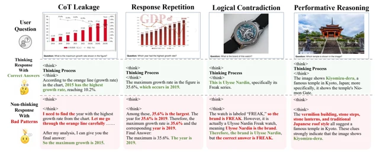
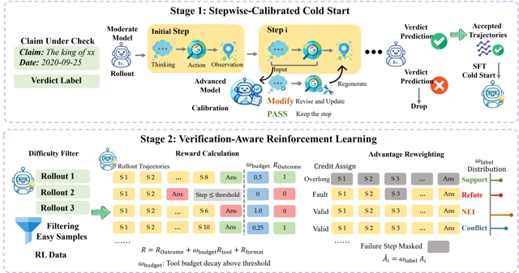
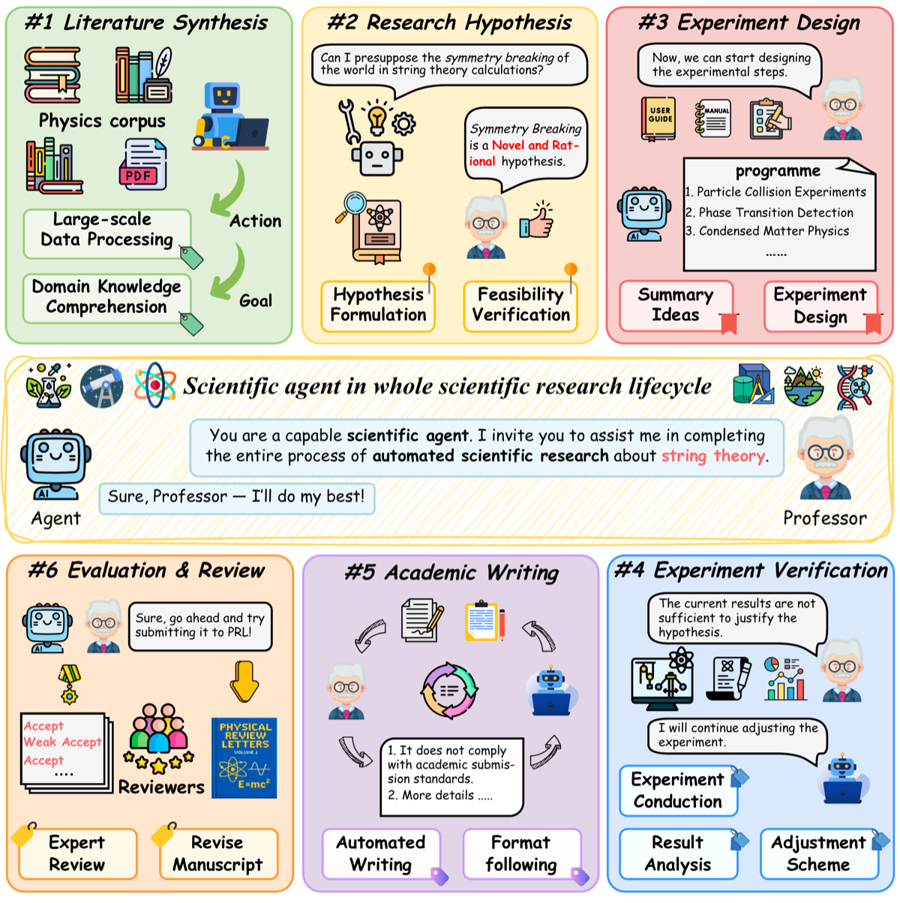
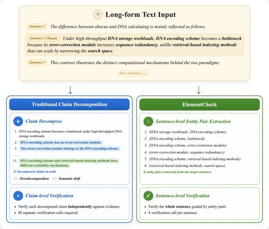
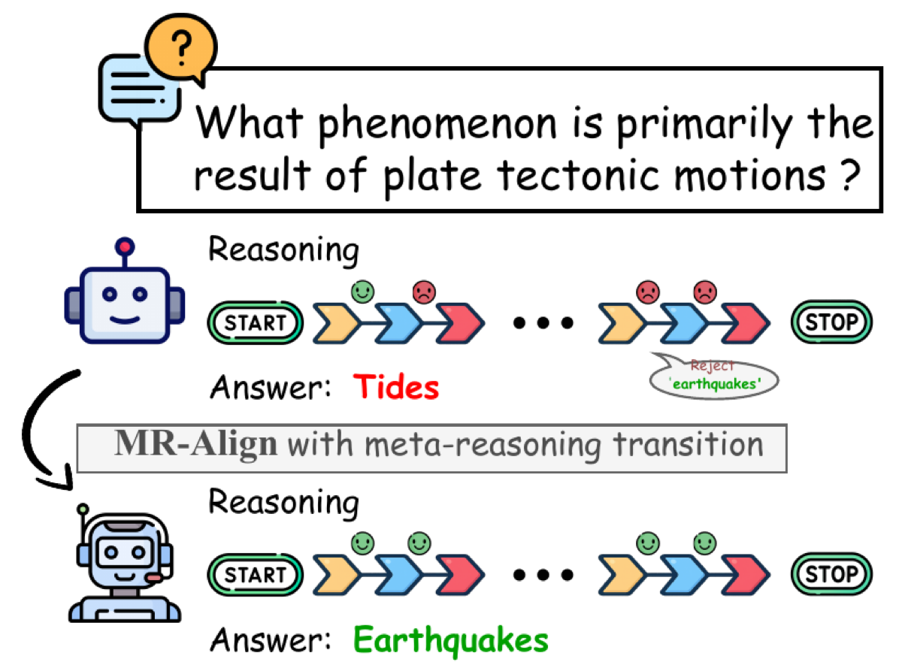
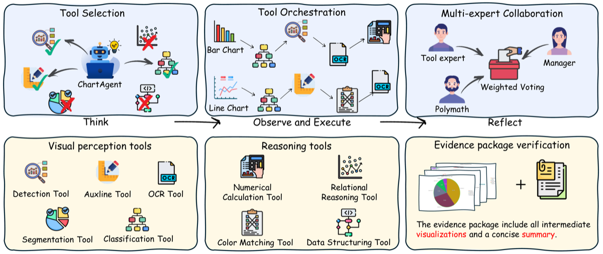
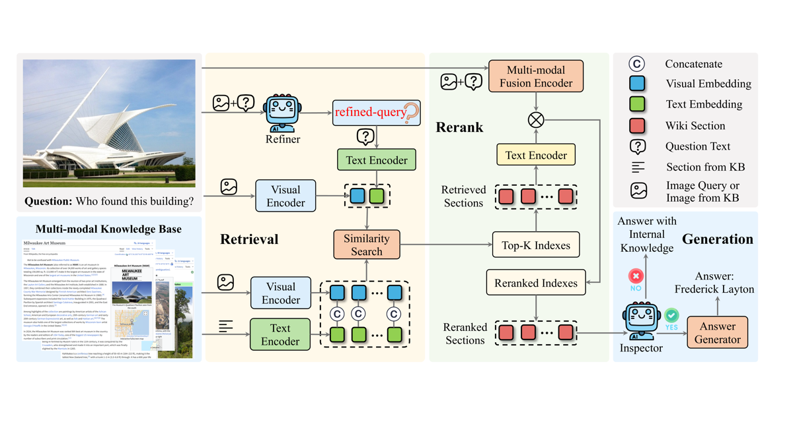
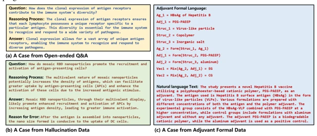
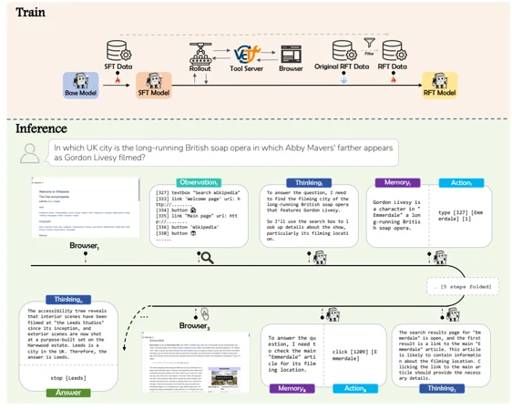

Jun 2025 – present
Tencent Hunyuan
Reward modeling and reinforcement learning for VLM post-training, including response-pattern evaluation and the curation of multimodal feedback data.
Hello 👋, I’m Xinming Wang (王新茗), a Ph.D. student at the Institute of Automation, Chinese Academy of Sciences (CASIA), in a joint doctoral program with Zhongguancun Academy. My advisors are Prof. Xu-Yao Zhang and Prof. Cheng-Lin Liu. I work on vision-language model (VLM) post-training at Tencent Hunyuan and collaborate with Dr. Yulong Chen on automated fact-checking. If you’re interested in working together, I’d love to hear from you.
Ph.D. student · Joint doctoral program with Zhongguancun Academy
B.E. in Automation · GPA 3.92 / 4.00
Advised by Prof. Qinghao Meng and Dr. Sheng Jin.
I study how reinforcement learning can teach models to check their reasoning and seek evidence. For vision-language models, I’m especially interested in when to inspect a chart with a tool, retrieve outside knowledge, or answer from the image itself.
Related work · MR-Align, OpenFC, ChartAgent, WikiSeeker, BrowserAgent
A model can reach the right answer while repeating or contradicting itself. I study how to measure these behaviors and verify individual claims in long answers. For image editing, I also evaluate whether a model preserves the rest of an image or document when asked to change one detail.
Related work · Beyond Correctness, ElementCheck, Omni IIE Bench, VDE Bench
Which parts of scientific research can an agent carry out, and how should we evaluate its work? I study this across fields through a survey of scientific agents and in a specific domain through an open-ended benchmark for adjuvant research.
Related work · The Hitchhiker’s Guide to Autonomous Research, Adjuvant Research Benchmark
Reward modeling and reinforcement learning for VLM post-training, including response-pattern evaluation and the curation of multimodal feedback data.
Model pruning and quantization, video understanding, and multimodal emotion recognition.








